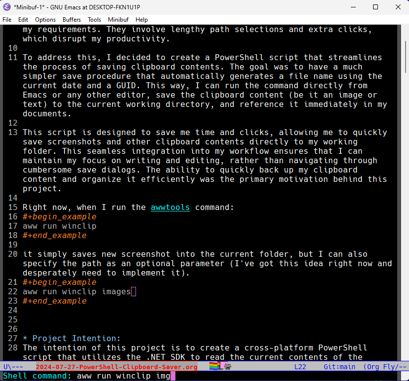
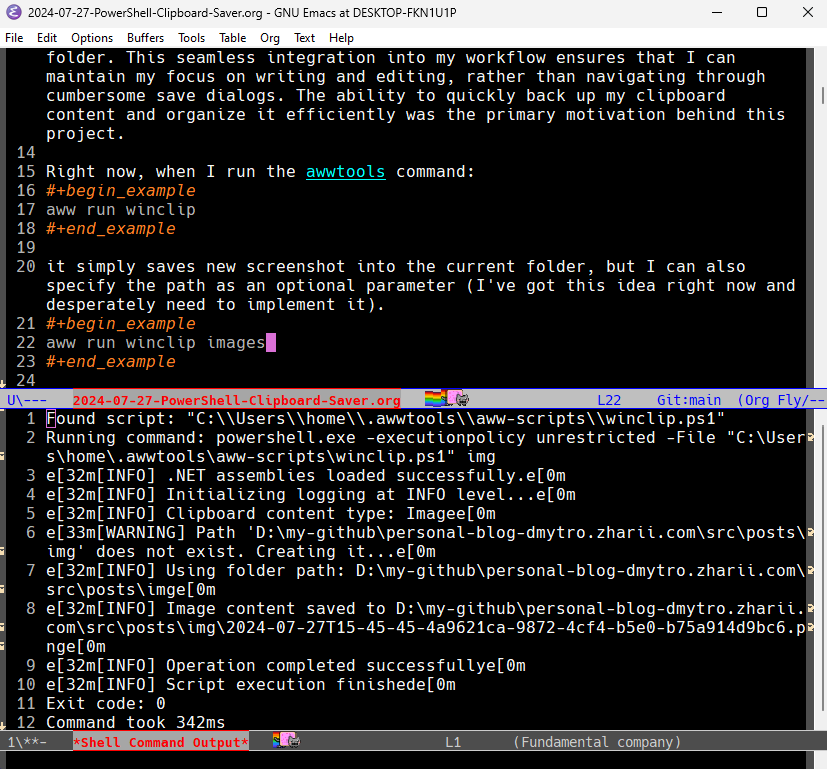

PowerShell Clipboard Saver
aww tools
Introduction: Simplifying Clipboard Content Saving with PowerShell
In my daily workflow, particularly when writing in Emacs using Org Mode, I often find myself needing to quickly save and reference clipboard content. Unfortunately, the built-in screenshotting tools in Windows 11 do not meet my requirements. They involve lengthy path selections and extra clicks, which disrupt my productivity.
To address this, I decided to create a PowerShell script that streamlines the process of saving clipboard contents. The goal was to have a much simpler save procedure that automatically generates a file name using the current date and a GUID. This way, I can run the command directly from Emacs or any other editor, save the clipboard content (be it an image or text) to the current working directory, and reference it immediately in my documents.
This script is designed to save me time and clicks, allowing me to quickly save screenshots and other clipboard contents directly to my working folder. This seamless integration into my workflow ensures that I can maintain my focus on writing and editing, rather than navigating through cumbersome save dialogs. The ability to quickly back up my clipboard content and organize it efficiently was the primary motivation behind this project.
Right now, when I run the awwtools command:
aww run winclip
it simply saves new screenshot into the current folder, but I can also specify the path as an optional parameter (I've got this idea right now and desperately need to implement it).
aww run winclip images
 
Project Intention:
The intention of this project is to create a cross-platform PowerShell script that utilizes the .NET SDK to read the current contents of the clipboard and save them to a file in the appropriate format. The script is designed to handle various types of clipboard content, including text, images, and rich text, and will create files with appropriate extensions and names based on the content type. This utility aims to be simple yet powerful, providing users with an easy way to save clipboard contents while ensuring compatibility with both Windows and Linux systems.
Project Summary:
The PowerShell script will read the current clipboard contents, determine the content type, and save the data to a file in the current directory. The file name will include the current date and time in ISO format, a random GUID, and an appropriate extension based on the content type. The script will include detailed logging with ANSI color formatting for better readability and will handle errors gracefully, ensuring users are informed of the script's operations and any issues that arise.
Outline for PowerShell Script to Save Clipboard Contents to a File
1. Initialization
- 1.1 Load necessary .NET SDK assemblies.
- 1.2 Initialize variables for logging and error reporting using PowerShell built-in plain text messages with ANSI code formatting.
2. Reading Clipboard Content
- 2.1 Check if the clipboard contains any data.
- 2.2 Determine the type of content in the clipboard (text, image, rich text, etc.).
- 2.3 Handle only the most recent item if multiple items are present.
3. Generating File Name
- 3.1 Get the current date and time in ISO format.
- 3.2 Generate a random GUID.
- 3.3 Determine the appropriate file extension based on the clipboard content type.
- 3.4 Construct the file name using the date, GUID, and extension.
4. Saving Clipboard Content to File
- 4.1 For text content:
- 4.1.1 Retrieve the text from the clipboard.
- 4.1.2 Write the text to a .txt file.
- 4.2 For image content:
- 4.2.1 Retrieve the image from the clipboard.
- 4.2.2 Save the image as a PNG file.
- 4.3 For rich text content:
- 4.3.1 Retrieve the rich text from the clipboard.
- 4.3.2 Save the rich text to an .rtf or .html file.
- 4.4 For other content types:
- 4.4.1 Retrieve the content from the clipboard.
- 4.4.2 Determine an appropriate file format.
- 4.4.3 Save the content to the file.
5. Error Handling and Logging
- 5.1 Log the start of the operation.
- 5.2 Log each significant step (clipboard read, file creation, etc.).
- 5.3 If an error occurs:
- 5.3.1 Log the error details with ANSI color highlighting for the word "error".
- 5.3.2 Print debugging information to the console.
- 5.3.3 Exit the script with a negative exit code.
- 5.4 If successful:
- 5.4.1 Log the success message.
- 5.4.2 Print the resulting file name to the console.
- 5.4.3 Exit the script with a positive exit code.
6. Script Termination
- 6.1 Ensure all resources are properly released.
- 6.2 Finalize logging.
Notes:
- The script will prioritize saving images as PNG and text as TXT.
- For rich content, the script will attempt to save as RTF or HTML, ensuring compatibility with default readers on both Windows and Linux.
- The script will work cross-platform on both PowerShell 5 and the latest PowerShell 7.
- Logging will be done directly to the console with ANSI code formatting for enhanced readability.
If this outline meets your needs, we can proceed to the speedrun phase where we quickly draft the script. Let me know if there are any further adjustments or if we’re ready to move on!
GPT Implementation
It seems that the script failed to load the necessary .NET assemblies because the `System.Windows.Forms.Clipboard` type was not found. This error can occur if the required assemblies are not present in the environment where the script is being executed.
Fixes and Improvements:
1. Assembly Loading Check:
- We should ensure that the assemblies are loaded correctly.
- For cross-platform compatibility, ensure that the script handles the differences between Windows and Linux environments.
2. Script Execution Context:
- Since clipboard operations are typically only available in a desktop environment, we should check and handle cases where the script is run in non-interactive or non-GUI environments.
3. Fallback Mechanism:
- Implement a fallback or more robust error handling when assemblies are not found.
Script:
param (
[string]$FolderPath
)
# Function to load necessary .NET assemblies
function Load-Assemblies {
<#
.SYNOPSIS
Loads the necessary .NET assemblies for clipboard operations.
.DESCRIPTION
This function loads the System.Windows.Forms and System.Drawing assemblies
required for accessing and manipulating clipboard content.
.EXAMPLE
Load-Assemblies
#>
try {
Add-Type -AssemblyName System.Windows.Forms -ErrorAction Stop
Add-Type -AssemblyName System.Drawing -ErrorAction Stop
Write-Host "`e[32m[INFO] .NET assemblies loaded successfully.`e[0m"
} catch {
Write-Host "`e[31m[ERROR] Failed to load necessary .NET assemblies: $($_.Exception.Message)`e[0m"
exit 1
}
}
# Function to initialize logging with optional logging level
function Initialize-Logging {
param (
[string]$LogLevel = "INFO" # Default log level
)
<#
.SYNOPSIS
Initializes logging for the script.
.DESCRIPTION
This function initializes logging by setting the log level and outputting an
initialization message.
.PARAMETER LogLevel
The log level for logging messages (default is "INFO").
.EXAMPLE
Initialize-Logging -LogLevel "DEBUG"
#>
Write-Host "`e[32m[INFO] Initializing logging at $($LogLevel) level...`e[0m"
}
# Function to determine clipboard content type
function Get-ClipboardContentType {
<#
.SYNOPSIS
Determines the content type of the clipboard data.
.DESCRIPTION
This function checks the clipboard for various data formats and returns the
type of content present (e.g., Text, Image, RichText).
.OUTPUTS
[string] - The type of content present in the clipboard.
.EXAMPLE
$contentType = Get-ClipboardContentType
#>
try {
$clipboard = [System.Windows.Forms.Clipboard]::GetDataObject()
if ($null -eq $clipboard) {
throw "Clipboard is empty or not accessible."
}
if ($clipboard.GetDataPresent([System.Windows.Forms.DataFormats]::Text)) {
return "Text"
} elseif ($clipboard.GetDataPresent([System.Windows.Forms.DataFormats]::Bitmap)) {
return "Image"
} elseif ($clipboard.GetDataPresent([System.Windows.Forms.DataFormats]::Rtf)) {
return "RichText"
} else {
return "Unknown"
}
} catch {
Write-Host "`e[31m[ERROR] Failed to determine clipboard content type: $($_.Exception.Message)`e[0m"
throw
}
}
# Function to generate a unique and valid file name
function Generate-FileName {
param (
[string]$extension
)
<#
.SYNOPSIS
Generates a unique file name with the specified extension.
.DESCRIPTION
This function creates a unique file name using the current date, time, and a GUID,
and appends the specified extension. The file name is sanitized for validity on
both Windows and Linux file systems.
.PARAMETER extension
The file extension to be appended to the generated file name.
.OUTPUTS
[string] - The generated file name.
.EXAMPLE
$fileName = Generate-FileName -extension "txt"
#>
try {
$currentDate = Get-Date -Format "yyyy-MM-ddTHH-mm-ss"
$guid = [guid]::NewGuid().ToString()
$fileName = "$($currentDate)-$($guid).$($extension)"
# Ensure the file name is valid for both Windows and Linux
$fileName = $fileName -replace '[<>:"/\\|?*]', '_'
return $fileName
} catch {
Write-Host "`e[31m[ERROR] Failed to generate file name: $($_.Exception.Message)`e[0m"
throw
}
}
# Function to resolve the folder path based on user input
function Resolve-FolderPath {
param (
[string]$FolderPath
)
<#
.SYNOPSIS
Resolves the folder path for saving files.
.DESCRIPTION
This function handles the provided folder path by validating, creating, or appending it
to the current directory, ensuring that the path is valid and can be used for saving files.
.PARAMETER FolderPath
The folder path to be resolved.
.OUTPUTS
[string] - The resolved folder path.
.EXAMPLE
$resolvedPath = Resolve-FolderPath -FolderPath "subfolder"
#>
try {
if ([string]::IsNullOrEmpty($FolderPath)) {
return (Get-Location).Path
}
$resolvedPath = $FolderPath
if (-not [System.IO.Path]::IsPathRooted($FolderPath)) {
# If the path is relative, append it to the current directory
$resolvedPath = Join-Path -Path (Get-Location).Path -ChildPath $FolderPath
}
if (-not (Test-Path -Path $resolvedPath)) {
Write-Host "`e[33m[WARNING] Path '$($resolvedPath)' does not exist. Creating it...`e[0m"
New-Item -Path $resolvedPath -ItemType Directory | Out-Null
}
if (-not (Test-Path -Path $resolvedPath -PathType Container)) {
throw "The path '$($resolvedPath)' is invalid."
}
Write-Host "`e[32m[INFO] Using folder path: $($resolvedPath)`e[0m"
return $resolvedPath
} catch {
Write-Host "`e[31m[ERROR] Failed to resolve folder path: $($_.Exception.Message)`e[0m"
throw
}
}
# Function to save text content from clipboard
function Save-TextContent {
param (
[string]$FolderPath
)
<#
.SYNOPSIS
Saves text content from the clipboard to a file.
.DESCRIPTION
This function retrieves text content from the clipboard and saves it to a file
with a .txt extension. The file name is generated uniquely.
.PARAMETER FolderPath
The folder path where the file will be saved.
.EXAMPLE
Save-TextContent -FolderPath "subfolder"
#>
try {
$resolvedPath = Resolve-FolderPath -FolderPath $FolderPath
$text = [System.Windows.Forms.Clipboard]::GetText()
if ($null -eq $text) {
throw "No text content available in clipboard."
}
$fileName = Generate-FileName -extension "txt"
$filePath = Join-Path -Path $resolvedPath -ChildPath $fileName
Set-Content -Path $filePath -Value $text -Encoding UTF8
Write-Host "`e[32m[INFO] Text content saved to $($filePath)`e[0m"
} catch {
Write-Host "`e[31m[ERROR] Failed to save text content: $($_.Exception.Message)`e[0m"
throw
}
}
# Function to save image content from clipboard
function Save-ImageContent {
param (
[string]$FolderPath
)
<#
.SYNOPSIS
Saves image content from the clipboard to a file.
.DESCRIPTION
This function retrieves image content from the clipboard and saves it as a .png file.
The file name is generated uniquely.
.PARAMETER FolderPath
The folder path where the file will be saved.
.EXAMPLE
Save-ImageContent -FolderPath "subfolder"
#>
try {
$resolvedPath = Resolve-FolderPath -FolderPath $FolderPath
$image = [System.Windows.Forms.Clipboard]::GetImage()
if ($null -eq $image) {
throw "No image content available in clipboard."
}
$fileName = Generate-FileName -extension "png"
$filePath = Join-Path -Path $resolvedPath -ChildPath $fileName
$image.Save($filePath, [System.Drawing.Imaging.ImageFormat]::Png)
Write-Host "`e[32m[INFO] Image content saved to $($filePath)`e[0m"
} catch {
Write-Host "`e[31m[ERROR] Failed to save image content: $($_.Exception.Message)`e[0m"
throw
}
}
# Function to save rich text content from clipboard
function Save-RichTextContent {
param (
[string]$FolderPath
)
<#
.SYNOPSIS
Saves rich text content from the clipboard to a file.
.DESCRIPTION
This function retrieves rich text content from the clipboard and saves it to a file
with a .rtf extension. The file name is generated uniquely.
.PARAMETER FolderPath
The folder path where the file will be saved.
.EXAMPLE
Save-RichTextContent -FolderPath "subfolder"
#>
try {
$resolvedPath = Resolve-FolderPath -FolderPath $FolderPath
$richText = [System.Windows.Forms.Clipboard]::GetData([System.Windows.Forms.DataFormats]::Rtf)
if ($null -eq $richText) {
throw "No rich text content available in clipboard."
}
$fileName = Generate-FileName -extension "rtf"
$filePath = Join-Path -Path $resolvedPath -ChildPath $fileName
Set-Content -Path $filePath -Value $richText -Encoding UTF8
Write-Host "`e[32m[INFO] Rich text content saved to $($filePath)`e[0m"
} catch {
Write-Host "`e[31m[ERROR] Failed to save rich text content: $($_.Exception.Message)`e[0m"
throw
}
}
# Function to handle errors and exit
function Handle-Error {
param (
[string]$message
)
<#
.SYNOPSIS
Handles errors by logging the message and exiting the script.
.DESCRIPTION
This function logs an error message to the console and exits the script with an error code.
.PARAMETER message
The error message to be logged.
.EXAMPLE
Handle-Error -message "An unexpected error occurred."
#>
Write-Host "`e[31m[ERROR] $($message)`e[0m"
exit 1
}
# Function to handle success and exit
function Handle-Success {
<#
.SYNOPSIS
Handles successful operations by logging a success message and exiting the script.
.DESCRIPTION
This function logs a success message to the console and exits the script with a success code.
.EXAMPLE
Handle-Success
#>
Write-Host "`e[32m[INFO] Operation completed successfully`e[0m"
exit 0
}
try {
Load-Assemblies
Initialize-Logging -LogLevel "INFO"
$contentType = Get-ClipboardContentType
Write-Host "`e[32m[INFO] Clipboard content type: $($contentType)`e[0m"
switch ($contentType) {
"Text" { Save-TextContent -FolderPath $FolderPath }
"Image" { Save-ImageContent -FolderPath $FolderPath }
"RichText" { Save-RichTextContent -FolderPath $FolderPath }
default {
Handle-Error -message "Unsupported clipboard content type: $($contentType)"
}
}
Handle-Success
} catch {
Handle-Error -message $_.Exception.Message
} finally {
Write-Host "`e[32m[INFO] Script execution finished`e[0m"
}